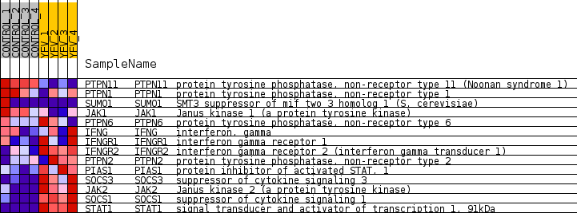
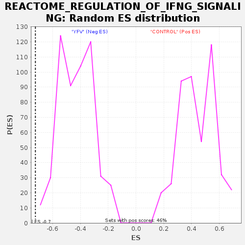

Profile of the Running ES Score & Positions of GeneSet Members on the Rank Ordered List
| Dataset | MATRIZ_GSE99081_collapsed_to_symbols.gsea_CLASE_99081.cls#CONTROL_versus_YFV |
| Phenotype | gsea_CLASE_99081.cls#CONTROL_versus_YFV |
| Upregulated in class | YFV |
| GeneSet | REACTOME_REGULATION_OF_IFNG_SIGNALING |
| Enrichment Score (ES) | -0.72357893 |
| Normalized Enrichment Score (NES) | -1.6825747 |
| Nominal p-value | 0.0 |
| FDR q-value | 0.037293777 |
| FWER p-Value | 0.526 |
| SYMBOL | TITLE | RANK IN GENE LIST | RANK METRIC SCORE | RUNNING ES | CORE ENRICHMENT | |
|---|---|---|---|---|---|---|
| 1 | PTPN11 | protein tyrosine phosphatase, non-receptor type 11 (Noonan syndrome 1) | 389 | 0.883 | 0.0440 | No |
| 2 | PTPN1 | protein tyrosine phosphatase, non-receptor type 1 | 3310 | 0.308 | -0.1122 | No |
| 3 | SUMO1 | SMT3 suppressor of mif two 3 homolog 1 (S. cerevisiae) | 4461 | 0.206 | -0.1673 | No |
| 4 | JAK1 | Janus kinase 1 (a protein tyrosine kinase) | 5037 | 0.156 | -0.1907 | No |
| 5 | PTPN6 | protein tyrosine phosphatase, non-receptor type 6 | 10935 | -0.096 | -0.5467 | No |
| 6 | IFNG | interferon, gamma | 11927 | -0.186 | -0.5934 | No |
| 7 | IFNGR1 | interferon gamma receptor 1 | 12180 | -0.211 | -0.5927 | No |
| 8 | IFNGR2 | interferon gamma receptor 2 (interferon gamma transducer 1) | 12881 | -0.285 | -0.6139 | No |
| 9 | PTPN2 | protein tyrosine phosphatase, non-receptor type 2 | 14662 | -0.533 | -0.6825 | Yes |
| 10 | PIAS1 | protein inhibitor of activated STAT, 1 | 14911 | -0.594 | -0.6521 | Yes |
| 11 | SOCS3 | suppressor of cytokine signaling 3 | 15669 | -0.939 | -0.6264 | Yes |
| 12 | JAK2 | Janus kinase 2 (a protein tyrosine kinase) | 16053 | -1.843 | -0.5081 | Yes |
| 13 | SOCS1 | suppressor of cytokine signaling 1 | 16143 | -2.593 | -0.3140 | Yes |
| 14 | STAT1 | signal transducer and activator of transcription 1, 91kDa | 16215 | -4.153 | 0.0015 | Yes |

